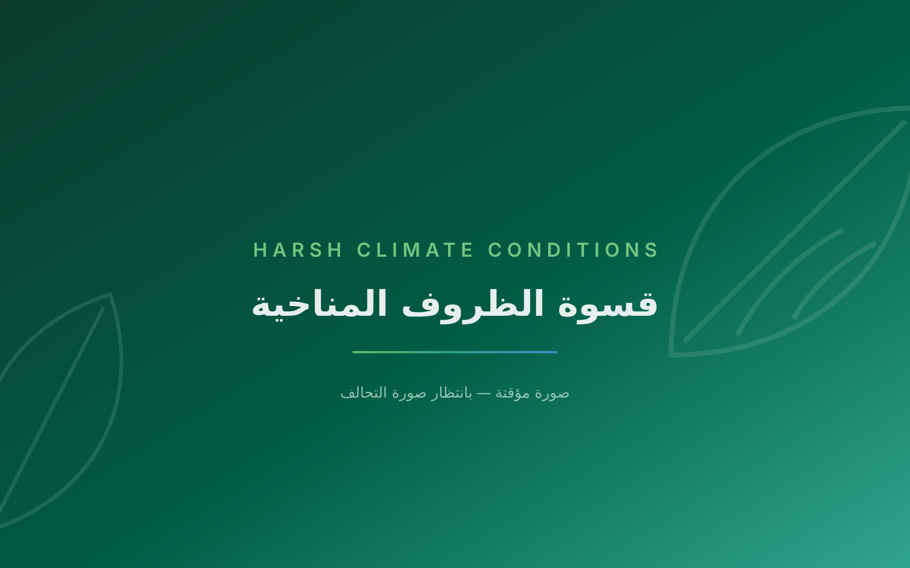
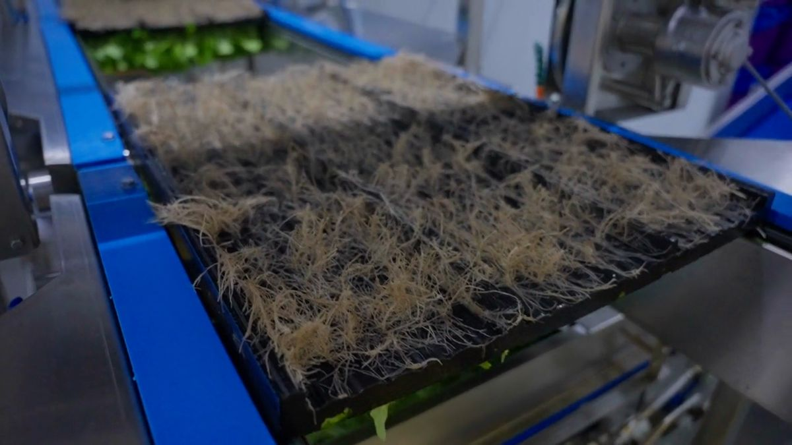
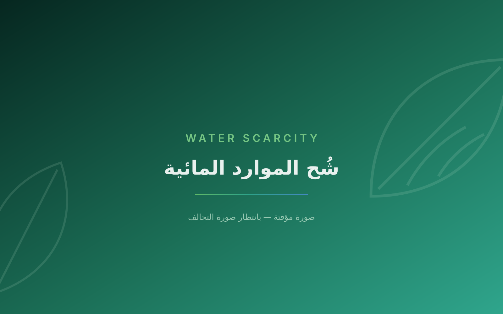
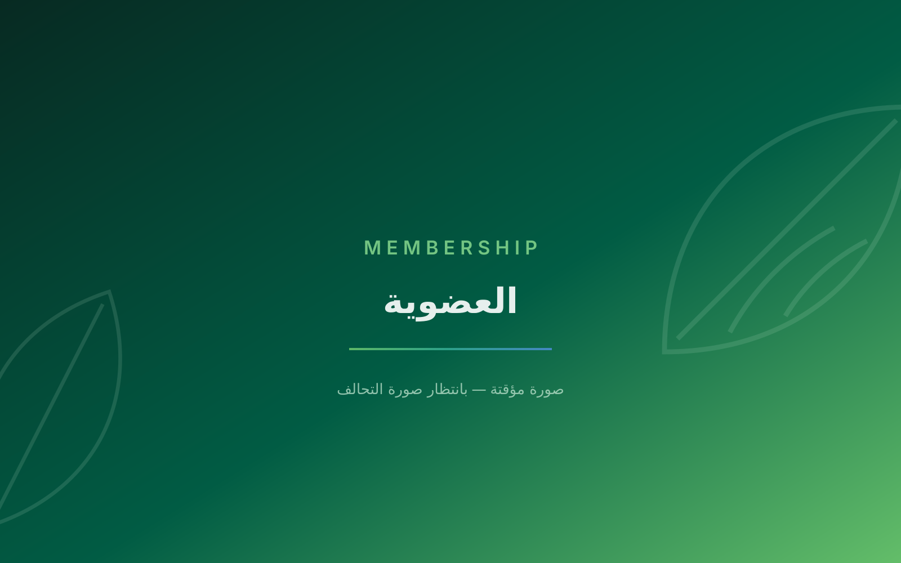

Harsh climate conditions
High temperatures and limited arable land constrain what can be grown, and where.
Home/About SAFTA
A national platform for collaboration, coordination and knowledge exchange in agrifood technology innovation, in support of Saudi Vision 2030.
Mission & Vision
The Saudi AgriFood Technology Alliance was established as a national platform for collaboration, coordination and knowledge exchange in the field of innovation. Its mission is to accelerate the adoption of agricultural and food technologies in support of Saudi Vision 2030 — bringing together government bodies, academic institutions, the private sector and non-profit organizations to collectively address the challenges of food security, sustainability and the broader adoption of agri-tech solutions across the Kingdom.
The Alliance is one of the key outcomes of the Ministry of Environment, Water and Agriculture’s Research and Innovation Executive Plan. It is designed to lead a transformation of the national food and agriculture sector through strategic coordination among stakeholders committed to advancing technology adoption, sharing knowledge, and shaping sound policies and regulatory frameworks.

Targeted working groups
Core institutional roles
Sectors represented
National strategies aligned
National Context
Saudi Arabia’s agriculture and food systems face significant challenges. Together they create a clear impetus to adopt advanced technologies — balancing food security with the preservation of natural resources.

High temperatures and limited arable land constrain what can be grown, and where.

Agriculture is the largest consumer of water in the Kingdom, making efficiency a national priority.

Crop losses from pests and disease reduce yields and increase input costs.

Salinity and declining organic matter reduce the productive capacity of farmland.

Losses between harvest and consumption weaken the return on every litre of water used.
Institutional Roles
The Alliance grew out of the Ministry’s Research and Innovation Executive Plan. Its institutional interventions centre on four core roles: steering innovation, building partnerships, driving demand for technology, and enabling startups.
Monitoring emerging and future technologies, and coordinating efforts among stakeholders across the national ecosystem.
Establishing and strengthening links between national and international entities to maximize the benefits of collaboration in research and innovation.
Facilitating technology adoption and removing the regulatory and legal barriers that stand in its way.
Empowering startups and innovators across the environment, water and agriculture sectors, and strengthening their capabilities.

Founding statement